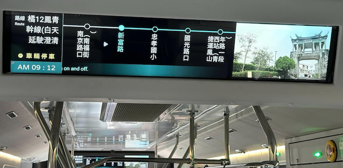
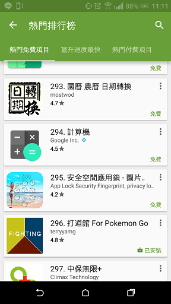

| 姓名： | 楊鎮齊 | 年齡： | 性別： | 男 | |
| 哪裡人： | 高雄人 | E-mail： | terryyamg@gmail.com | 學歷： | 中山大學-電機自動控制組碩士2013年9月畢 |
| 職稱： | Sr. Android/iOS Developer | GitHub： | https://github.com/terryyamg | ||
| 期望職位： | (iOS/Android/Flutter)工程師(年資:) | 期望上班地點： | 高雄市, 遠端 |
(現職)鴻海科技集團-中央資訊（2021年7月~）
Taipei Verify(Flutter)北市府相關app。
主要為接手之前人的flutter app, 用於店家掃客人的優惠券,並新增場館驗票功能,使用框架是provider。
App Store:
Google Play:
Model T LCD(Android)鴻海電動公車內部顯示到站app。
主要開發人員,使用kotlin並使用MVVM架構,串接各家廠商車機socket(到站離站訊號)與can socket(公車左右轉訊號),並建立log上傳機制。
示例圖: 
相信app(Android)鴻海內部app。
維護原本功能並新增功能(FIDO驗證,黑暗模式,越南語系),並根據功能拆分SDK上傳到內部gitlab。
鴻海科技集團-肚肚股份有限公司（2019年10月~2021年7月)
肚肚dudoo POS(iOS)餐飲POS系統,給許多一般家餐飲店與王品集團使用。
App(iOS) - 使用Swift 4.2語法開發,主要負責會員、點餐暫存、第三方支付串接(街口、一卡通、悠遊卡、Ocard)、禮券(王品)、部分餐點叫餐(王品)功能, 瘋美食會員串接。
官網介紹
App Store:
Kooppi(香港商酷比軟體創作有限公司台灣分公司)（2017年03月~2019年9月)
優惠卷 App(Android、iOS)第一個案子,利用Beacon偵測附近商家並掃描其優惠卷賺取點數,點取地圖可以觀看優惠商家。
後端 - 由後端人員製作,與後端串接資料使用Restful api。
App(Android) - 與另兩位Android developer合作開發,使用技術包含 Beacon應用,Firebase推撥等。
App(iOS) - 接手外包公司開發到一半的程式,使用Swift 3語法開發,根據Android製作相同功能的app。
發案公司使用,未上架
Kabsule App(iOS)公司產品, 一個社群軟體app, 包含一般的註冊登入, fb登入, 互加朋友功能, 訊息可提供設定未來日期時間,時間到將可開啟訊息, 可錄音錄影拍照並上傳影音與照片, 可設定google map地點位置開啟特定訊息, 是一個中大型App
後端 - 由後端人員製作,與後端串接資料使用Restful api。
App(iOS) - 與另一位iOS developer共同開發。
新聞介紹
App Store: 已下架
鴻才科技股份有限公司(2014年11月~2017年03月)
巡查 App(Android、iOS)公司主產品,兩種類似性質的App,但專業用途不一樣,目的在於工地檢查異常紀錄,由手機端拍照並紀錄異常狀態,記錄完成後回傳至後端處理。
後端 - 由後端人員製作,與後端串接資料使用Restful api與MQTT。
App(Android) - 開發IDE為Android Studio,使用登入、拍照、推撥、GPS定位、NFC感應、QRcode掃描、Google Map 應用,資料傳輸使用檔案格式、json格式上下傳,後續使用MVP架構部分重構。
App(iOS) - 開發IDE為Xcode,使用Swift 2.2語法開發,使用MVC架構,功能與Android相似。
Google Play:
App Store:已下架
盤點 App(Android)當倉庫物品不見時,藉由盤點可以找出物品不見的原因,使用感應裝置（NFC,QRcode）感應物品,可進行借出、收回與盤點功能,紀錄並計算數量,完成後,回傳至後端資料庫。
後端 - 由主管帶領從需求分析到後端資料庫與網頁製作,使用MYSQL做為後端資料庫,UI使用
dhtmlx,搭配PHP與Javascript製作。App - 開發IDE為Eclipse,使用GPS定位、NFC感應、QRcode掃描,資料傳輸使用json格式上下傳。
巡堂點名 App(Android)開發給學校使用,藉由巡堂人紀錄上課狀態,並回傳不守校規的學生與老師名單,由手機端拍照並記錄違規名單,上傳資料時寄出email通知違規人員。
後端 - 自己分析需求並製作,藉由前面學到的方式實行之。
App - 開發IDE為Eclipse,使用到登入、拍照、自動寄信功能,資料傳輸使用json格式上下傳。
Google Play:已下架
商用 App(Android)記錄老人照護資料,養護用途App,登入並記錄使用者資料,可進行活動申請,賺取點數,使用點數消費商品。
後端 - 由後端人員製作。
App - 開發IDE為Eclipse,使用照片裁切、錄音、照片上下傳加解密,資料傳輸配合後端人員使用xml格式上下傳。
目前成功於委託公司使用中。
曼聯實業有限公司（2014年3月~2014年11月）
維護既有的POS系統使用PHP、MYSQL、Javascript與JQuery依客戶需求修改並維護系統。
開發Android App此為第一次正式開發Android App,使用Eclipse開發,應用到的功能為google map、GPS定位、距離偵測、推播訊息、自動更新、自動發信、搜尋功能、前導說明頁、分享功能等等的商業功能,並使用Parse API為app後台,進行各種資料存取,此App主要功能為:
定點推撥功能:使用者在距離某店家定點範圍內時,跳出推播訊息。
QRcode掃瞄功能:使用者使用QRcode掃描店家QRcode可享優惠,並記錄在雲端網頁上。
購買功能:當使用者購買商品後,會自動推撥與發信給店家。
店家後台功能:店家登入後可看QRcode掃描次數與商品賣出通知。
在計畫終止後,決定繼續尋找開發Android App的公司繼續深入開發。
🔼
寶可夢TCG卡片(Flutter)【2024年】練習Flutter, 觀看卡片用
使用公開Pokemon API顯示圖片並可以下載
使用架構為Bloc並使用AI幫忙撰寫UnitTest
Github:
聽音樂(iOS)【2021年】練習SwiftUI, 背景聽歌用
2021建立專案, 2024重構使用The Composable Architecture TCA架構
Github:
補習班(iOS)【2019年】幫友人開發, 登入身分老師與學生, 觀看公告, 上傳作業, 線上測驗與聯絡簿等功能
使用MVVM架構,使用Swift 4.1語法開發
與後端串接資料使用Restful api。
未上架
覺醒圖(Android)【2019年】(iOS)【2021年】白貓app遊戲抽角抽不到,但也想看角色圖,又懶得去找網站,於是寫了一個爬蟲抓取資料與圖片方片查找的app
使用MVC架構,初次使用Kotlin語法開發
使用Realm做db, JSOUP爬蟲, Firebase Crashlytics來除錯。
2021開始翻譯Android專案到iOS, iOS使用MVVMC架構搭配RxSwift。
下載人數1萬+
Google Play:
Github:
老人照護(iOS)【2018年】幫友人開發, 兩個App, 一個給看護人員使用, 一個給老人家使用, 兩方皆要註冊帳號, 看護方須通過後台認證, 老人家方須通過信用卡註冊, 可選擇看護與項目並付費後, 看護同意再次確認並可開始定時照護
使用MVC架構,使用Swift 4.0語法開發
使用信用卡套件, 與後端串接資料使用Restful api。
>App Store: 已下架
打道館 For Pokemon Go(Android)【2016年】跟著Pokemon Go的熱潮,在打道館時,幫助使用者篩選出屬性相剋的寶可夢,使用浮動視窗以方便篩選不用切換app
下載人數突破5000人
最高排名在工具類296名 
說明收錄在巴哈姆特Pokemon Go板精華區 網址
Google Play: 已下架
🔼
| 架構： |
其他MVVMC, flutter的BLOC, SwiftUI的TCA |
||||||||||
| 用過的資料庫： |
|
||||||||||
| 用過的傳輸資料格式： |
|
||||||||||
| 常用IDE： |
|
||||||||||
| 第三方套件： |
|
||||||||||
| 工具： |
|
🔼
🔼